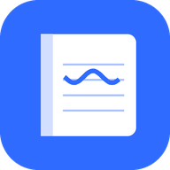

노트 뷰어
태블릿에서 쓴 노트를 휴대폰에서 바로
어떤 앱인가요?
노트 뷰어는 노트 앱이 Google 드라이브에 자동으로 백업한 PDF 노트를 휴대폰(Android)에서 노트북처럼 읽는 읽기 전용 뷰어입니다.
- 노트 폴더를 한 번 연결하면 태블릿에서 고친 노트가 휴대폰에도 자동으로 나타납니다 (백그라운드 동기화, 업데이트 알림).
- 이어 읽기, 탭으로 여러 노트 열기, 한 페이지씩 보기, 썸네일·책갈피·목차, 오프라인 열람
- 태블릿·폴더블에서 두 페이지 펼쳐 보기, 밤에 보기 좋은 어두운 페이지, 손글씨까지 찾는 필기 검색(베타)
- 노트 폴더 여러 개·Google 계정 여러 개 함께 보기, 홈 화면 '이어 읽기' 위젯
- 개요(목차)가 없는 PDF도 장(章)을 자동으로 찾아 바로 이동 (베타)
- GitHub 공개 저장소와 최신 릴리스의 PDF도 로그인 없이 서재에 (바뀌면 자동으로 새 버전)
- 필요한 페이지만 골라 PDF·이미지(ZIP)로 저장
Google 사용자 데이터를 어떻게 쓰나요?
- 앱은 Google 드라이브 읽기 전용 권한(
drive.readonly)으로 사용자가 고른 노트 폴더의 폴더 목록과 PDF 파일을 읽습니다. 파일을 만들거나 수정·삭제하지 않습니다. - 노트 폴더를 추천하고 새 노트를 찾기 위해 드라이브의 다른 위치에 있는 PDF·폴더의 이름과 위치, 수정 시각도 읽지만, 기기 안에서만 처리하고 저장하지 않습니다.
- 읽은 PDF는 휴대폰 안에서만 화면에 표시하고 오프라인용으로 저장합니다. 개발자 서버가 없으며, 노트와 Google 드라이브 데이터는 개발자나 제3자에게 전송되지 않습니다. 광고와 추적 도구도 없습니다.
- 계정 이메일과 이름은 어느 계정이 연결됐는지 설정 화면에 보여 주는 데만 씁니다.
- GitHub 저장소를 추가하면 앱이 GitHub 서버에 직접 요청합니다(로그인 없음). GitHub는 일반 웹 요청처럼 IP 주소, 기기 종류 같은 일반 요청 정보, 요청한 저장소 주소를 받습니다.
- 필기 검색(기본 꺼짐)은 Google Play 서비스의 ML Kit로 휴대폰 안에서 글자를 인식합니다. 페이지 이미지는 보내지 않으며, ML Kit는 진단용 기기·앱 정보를 Google에 보낼 수 있습니다.
- Google API에서 받은 정보의 사용은 Google API 서비스 사용자 데이터 정책(제한적 사용 요건 포함)을 따릅니다. Google 사용자 데이터를 AI·머신러닝 모델 학습에 사용하지 않습니다.
- 앱의 설정 → 연결 해제나 Google 계정의 연결된 앱에서 언제든 권한을 철회할 수 있습니다.
자세한 내용: 개인정보처리방침
문의
Note Viewer
Your tablet notes, right on your phone
What is it?
Note Viewer is a read-only Android app for reading, like a notebook, the PDF notes that your note-taking app automatically backs up to Google Drive.
- Connect your notes folder once, and notes you edit on your tablet appear on your phone automatically (background sync with update notifications).
- Continue reading, notes in tabs, one page at a time, thumbnails, bookmarks, outline, offline reading
- Two pages side by side on tablets and foldables, dark pages for night reading, handwriting search (beta)
- Several notes folders and Google accounts together, a "Continue reading" home screen widget
- Chapters found automatically in PDFs without an outline (beta)
- PDFs from public GitHub repositories and their latest release, no sign-in (new versions appear automatically)
- Export just the pages you need as a PDF or images (ZIP)
How does it use Google user data?
- The app uses read-only Google Drive access (
drive.readonly) to read the folder list and PDF files inside the notes folder you choose. It never creates, modifies or deletes files. - To suggest a notes folder and detect new notes, it also reads the names, locations and modification times of PDFs and folders elsewhere in your Drive; this is processed on the device only and not stored.
- The PDFs are displayed and stored for offline reading only on your phone. There is no developer server; your notes and Google Drive data are never sent to the developer or any third party. No ads or tracking.
- The account email and name are used only to show which account is connected in Settings.
- If you add GitHub repositories, the app requests them directly from GitHub's servers (no sign-in); like any web request, GitHub receives your IP address, standard request information such as the device type, and the repository addresses requested.
- Handwriting search (off by default) recognizes text on the phone with ML Kit in Google Play services. Page images are not sent; ML Kit may send device and app diagnostics to Google.
- Use of information received from Google APIs adheres to the Google API Services User Data Policy, including the Limited Use requirements. Google user data is not used to train AI/ML models.
- Revoke access at any time with Settings → Disconnect in the app or in your Google Account's connected apps.
Details: Privacy Policy